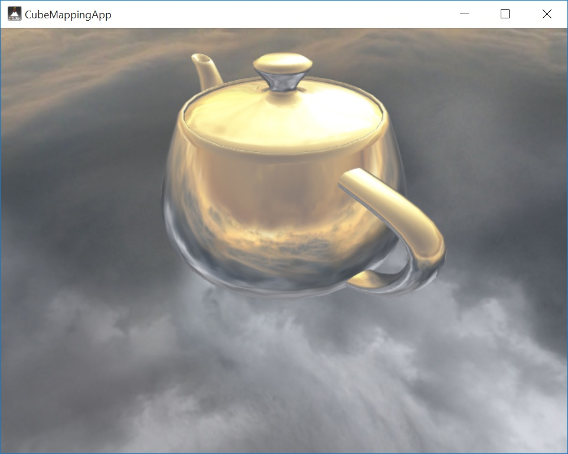

This guide will help you get started using Cinder on Windows. Start by downloading Cinder itself from the site's Download Page if you haven't already. Choose the Visual C++ 2013 version if you don't already have Visual C++ installed.
Cinder supports Visual Studio 2013 and Visual Studio 2015, and works with both the commercial versions and the freely available Community editions. If you don't already have one of those versions installed, we'll walk you through setting up the free 2015 edition.
The first step is to install Visual C++ itself - click the Download Community Free button on the Visual Studio download page. Next, launch the installer. Make sure that the Visual C++ option is selected under Programming Languages and press the Install button.
If you are using one of our packaged releases, you should be all set. If you're working from GitHub you'll want to follow the build instructions in our Cinder + Git guide.
To verify your installation, try opening and building one of the samples. From Windows Explorer, navigate to the cinder\samples\_opengl\CubeMapping\vc2013 folder and open CubeMapping.sln.
Under the Debug menu select Start Debugging and click Yes when prompted to build the project. The CubeMapping sample will launch and should look like this:
TinderBox is Cinder's GUI tool for creating new projects quickly and easily. A guide to creating projects using TinderBox is available here.
If you would like to keep up with the latest Cinder development, the project is hosted on GitHub. A guide for setting up Cinder using git is available here.